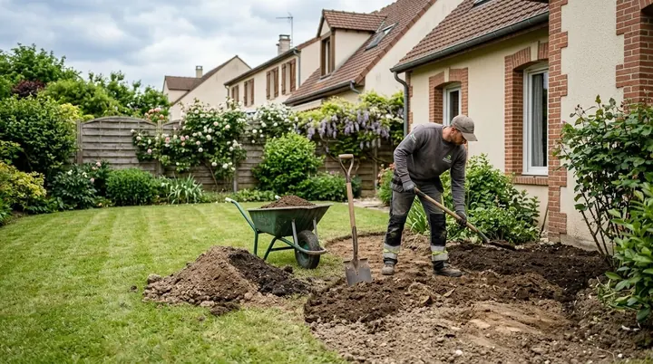
Terrassement
Mise en forme du terrain.
Allibert Paysage · Versailles
De l'étude de votre projet à l'entretien régulier, en passant par les travaux d'aménagement : tout se fait au sein de la même équipe.
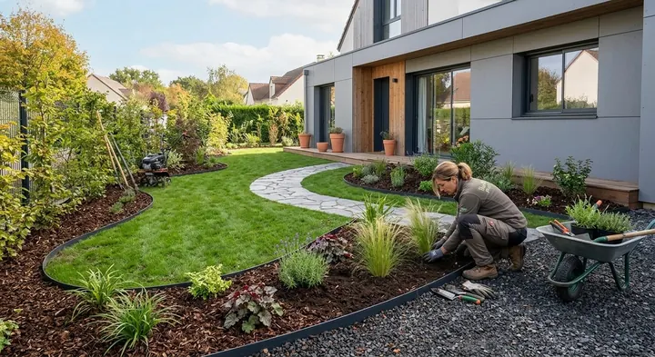
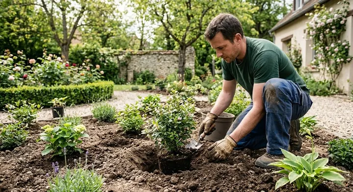
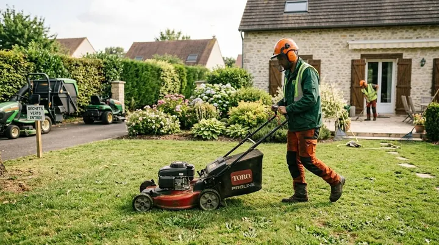
1 · Conception
Chaque jardin commence par une étude personnalisée, pour que vous voyiez le résultat avant le début des travaux.
2 · Création
Du terrassement à l'éclairage, nos équipes réalisent l'ensemble des travaux d'aménagement extérieur.

Mise en forme du terrain.
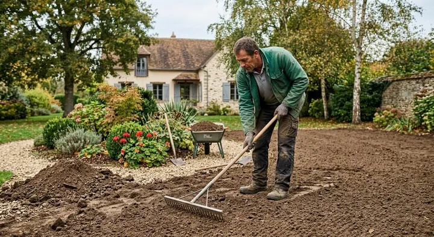
Pelouse installée sur un sol préparé.
Massifs, arbres, arbustes et vivaces.
Arrosage automatique et installation d'un robot de tonte.
Terrasses en bois et dallages.
Éclairage de votre jardin.
Murets, bordures et marches.
Installation de piscine et de jacuzzi.
Abri de jardin, carport, claustras, clôtures, portails et éléments décoratifs.
3 · Entretien
En intervention ponctuelle ou dans le cadre d'un contrat d'entretien sur mesure, selon ce que demande votre jardin.
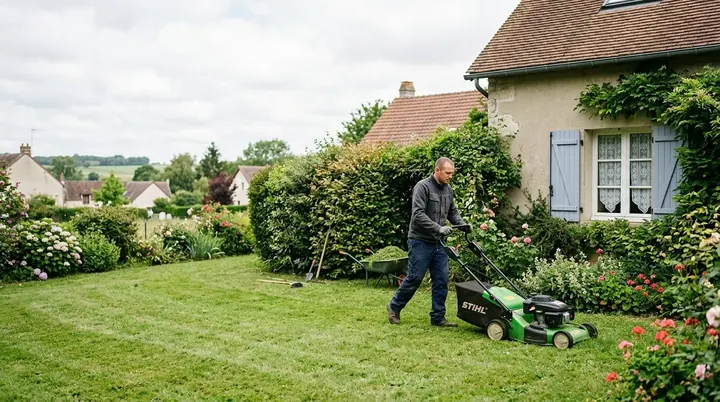
Tonte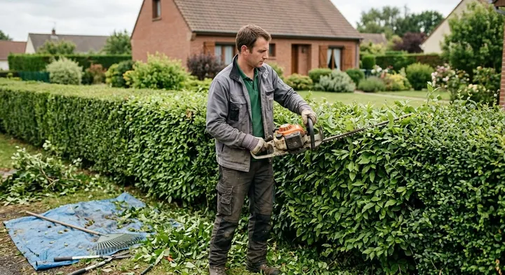
Taille de haies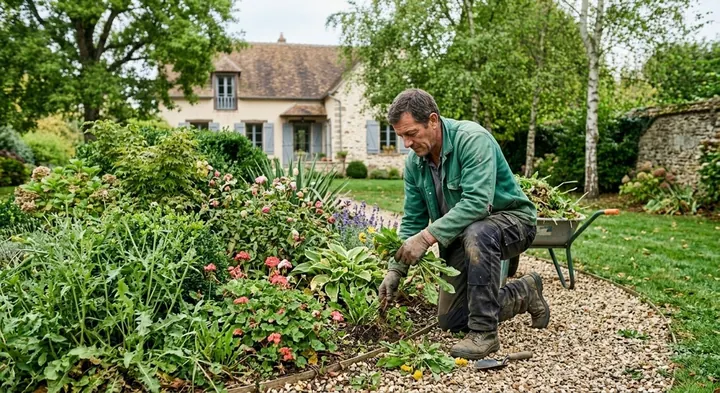
Désherbage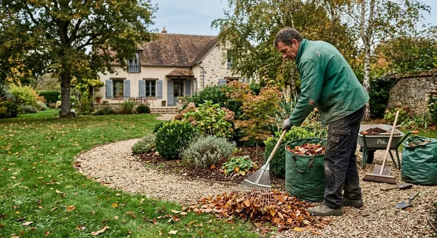
Feuilles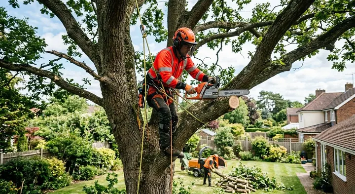
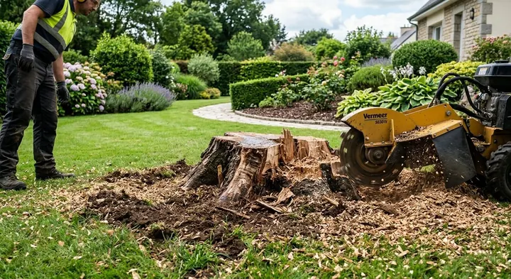
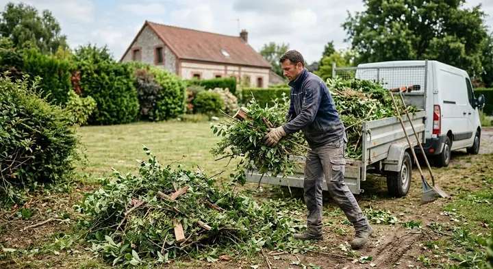
4 · Prestations spécialisées
Des interventions plus techniques, menées par la même équipe que le reste du chantier.
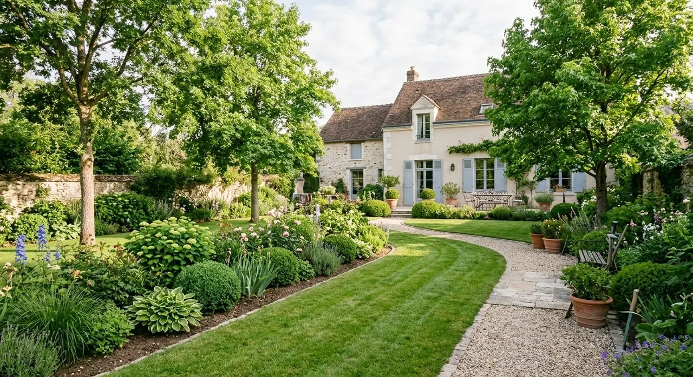
Votre devis
Décrivez-le en quelques lignes, nous revenons vers vous pour en parler sur place.